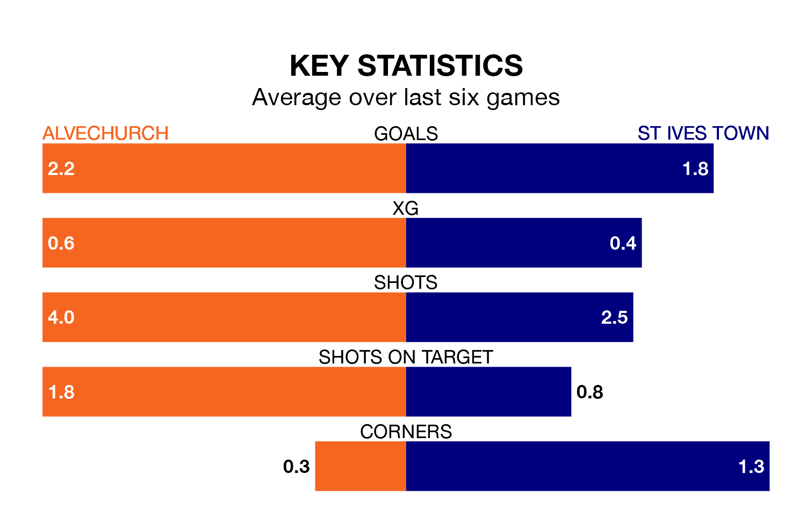

Alvechurch face St Ives Town on Saturday seeking to protect their long unbeaten run in the Southern League Premier Central.
Alvechurch are unbeaten in six, with three wins and three draws, ahead of the 3pm kick-off.
They face a St Ives team who have won three and lost three over the same number of games.
With 64 goals in 33 games so far this season, St Ives are the league's third-highest scorers with 1.9 goals per game. But they are conceding more than average too, letting in 52 goals at a rate of 1.6 per game.
Alvechurch, meanwhile, are below average scorers, with 1.4 goals per game, compared to a league average of 1.5. They have conceded 1.8 goals per game.
In the last 10 years, Alvechurch and St Ives have played each other on seven occasions. Alvechurch won four of them, St Ives two, and they drew once.
On average, Alvechurch scored 1.6 goals and St Ives 1.0 in those matches.
Their last meeting was on February 18 2023, when Alvechurch won 4-1 at home.
The home team are 14th in the table after 31 games, of which they have won 10 and drawn nine, earning 39 points.
Town are five places ahead of Alvechurch in ninth, with 14 wins and three draws putting them on 45 points.
Alvechurch's last match was on February 24, a 2-2 draw against Leiston.
St Ives lost 2-1 against Coalville Town last time out, on Monday.
Updated: 09:34 (UTC), 08/03/24